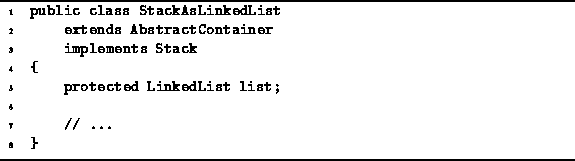

Data Structures and Algorithms
with Object-Oriented Design Patterns in Java
Data Structures and Algorithms
with Object-Oriented Design Patterns in Java
In this section we will examine a
linked-list implementation of stacks
that makes use of the LinkedList
data structure developed in Chapter  .
Program introduces the StackAsLinkedList class.
The StackAsLinkedList class is a concrete class
that extends the AbstractContainer class introduced
in Program
and implements the Stack interface defined in Program .
.
Program introduces the StackAsLinkedList class.
The StackAsLinkedList class is a concrete class
that extends the AbstractContainer class introduced
in Program
and implements the Stack interface defined in Program .

Program: StackAsLinkedList fields.
 Copyright © 1998 by Bruno R. Preiss, P.Eng. All rights reserved.
Copyright © 1998 by Bruno R. Preiss, P.Eng. All rights reserved.